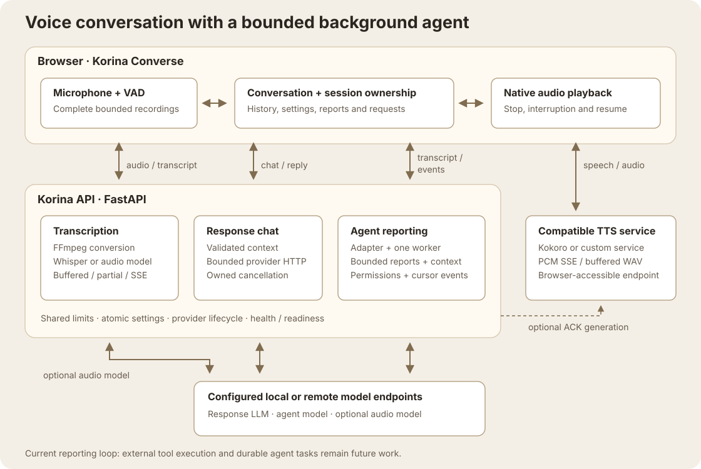

Architecture overview
Hackathon refactor preview · 22 October 2026.
Work is being reviewed on
codex/hackathon-refactor, based on alpha.
These changes are not yet merged into alpha or the release branch.
Setup and rehearsal guide · Progress and verification evidence · Review PR #24.Korina Converse owns the human-facing voice loop. Korina Agent receives transcript deliveries and produces reports, injections, and permission events through an adapter boundary.

The browser orchestrates voice turns and calls compatible TTS directly. The API handles transcription, response-model requests, and agent delivery; the agent returns reports and permissions through cursor-based events.
Current boundaries
| Area | Responsibility |
|---|---|
korina/app_factory.py, korina/routes/ | App composition, middleware, static assets, and HTTP contracts. |
korina/services/ | STT orchestration, model catalogs, provider lifecycle, speech clients, agent reporting, and ACK generation. |
korina/converse/, korina/agents/ | Channel and agent protocols, registry, and the default in-process adapters. |
Korina/js/ | Native browser modules for settings, recording, VAD, transcription, playback, agent events, and diagnostics. |
korina/util/paths.py | Environment overrides, portable binary discovery, source/bundled assets, and writable runtime paths. |
Refactor preview
- Buffered, partial, and SSE transcription share one multimodal capability-cache and fallback policy. Provider errors and no-speech results retain consistent fallback behavior; quiet/clipped Whisper fallback keeps VAD off. Blocking conversion/inference runs away from the async event loop. Fixed temporary filenames let FFmpeg identify WAV/WebM by content instead of trusting client filename suffixes.
- Bounded agent deliveries and reset protection prevent stale work from entering a cleared session. Owned connected HTTP checks its generation about every 50 ms and closes stale I/O so the same worker can recover. Remote computation may continue. Clear Session aborts its browser chat fetches through body completion; Stop Live cancels live/interruption chats while an independent typed Ask stays current. Chat and all three transcription paths share async request ownership, including STT model discovery. Disconnect/ASGI cancellation releases connected provider I/O and prevents later fallback, cache writes, decoder admission, or native iterator steps. Active native work finishes before serialized cleanup releases its lease and files. Priority rules are separated from orchestration.
- Shared provider transport bounds JSON/error bodies, enforces total connected-I/O deadlines, and strips credentials/cookies across origins. One leased Whisper model selection prevents resident cache growth; busy replacement is retryable.
- A shared browser audio-probe module bounds cache reads to five seconds, 16 MiB, and 512 typed entries. Failed reads preserve the known map; superseded discovery aborts its old read. A confirmed probe reset releases its control before optional background discovery. Backend probe batches share request ownership with chat/STT: retirement closes connected provider I/O and skips later candidates. Cache mutation checks ownership inside the configuration transaction, including STT fallback after a lock wait. Synthetic probe files are cleaned even when generation or writing fails.
- Browser SSE parsing validates framing, UTF-8, fields, byte limits, and complete termination. Buffered and PCM playback enforce download, sample-rate, and cumulative duration budgets before allocation. Streamed playback completion follows the AudioContext clock; suspension keeps queued speech owned and Stop available, while premature context closure produces an error.
- Validated schemas and request byte limits bound work before it reaches model services. The waveform reuses existing bars between frames and adjusts their count on resize. Read-only health audio limits drive browser capture deadlines and byte budgets; complete native files are preserved, idle files rotate, and oversize captures are discarded whole with recovery text.
- Optional ACK catalogs are validated before cache changes. Invalid files produce explicit degraded health and unknown counts without preventing startup or required voice readiness; their endpoints return retryable errors until repair. The generation queue, audio downloads, and atomic WAV publication remain bounded. Voice saves precede rebuild requests, and ACK diagnostics do not replace transcription status.
- The optional Kokoro service owns buffered and streamed requests through model preparation and synthesis. A retired request starts no later native step. Serialized cleanup keeps the single inference slot busy until active work finishes; a new request receives retryable HTTP 503 until the slot is free. Health remains responsive.
- Provider activation and refresh retain services used by response, multimodal STT, and enabled agent roles. Conflicting changes fail before teardown. Config changes coordinate with lifecycle work; model-folder append/delete merges atomically with current settings and preserves an explicit empty list.
- Model catalogs cap each role/source at 512 valid IDs within 256 KiB of JSON-escaped UTF-8 identifiers; shared metadata covers at most 1024 IDs. Local traversal and request-scoped sidecar estimates each have finite entry budgets. Truncation/errors remain visible, and saved unlisted selections stay annotated rather than silently changing.
- Response, agent, and multimodal STT share completion validation. Malformed provider payloads produce short structural errors; valid Unicode text must fit the existing 8192-character conversation limit before it enters state/history.
- Candidate agent discovery uses a bounded POST body without saving settings. Browser errors show known reasons and validation fields with bounded text rather than dumping raw request inputs.
- Agent gateway publication serializes lookup, explicit registration, and publication. Lazy default construction stays outside that lock; an adapter registered during construction remains selected instead of being overwritten by the default.
- Health aggregates server-resolved providers and readiness signals; frontend polling distinguishes transient misses, loading, and unavailable services. Poll generation, current provider settings, activation, and session ownership prevent old successes or failures from replacing readiness, capture limits, or ACK results.
- Channel selection shares a rendering generation with discovery, rejects stale reads, and stays disabled while its explicit save is pending. The server persists selection before publishing it; failed saves preserve the active channel. This selects a Python channel and does not reroute browser voice.
- Browser startup keeps controls and diagnostics available through failed or delayed capability/model discovery. Settings saves send observed edits only; a late initial read preserves drafts and newer successful saves. Failed settings reads can retry from Settings.
- Wheels bundle the UI; generated config and ACK audio stay in a writable user directory. Linux service units render checkout/interpreter paths instead of assuming a home layout.
Remaining architecture work
The adapter seam is implemented, but an arbitrary external agent still needs a compatible adapter. Tool execution, durable tasks, project trust enforcement, and memory remain separate from the reporting loop. Live provider and hardware validation remains part of the rehearsal gate.